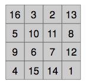
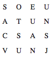
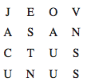

70. BÖLÜM
Sihirli bir kare. Dürer’in oymabaskısında sayıların bulunduğu kareye bakan Katherine başını salladı. Çoğu kişi Langdon’ın aklını kaçırdığını düşünürdü ama Katherine onun haklı olduğunu hemen anlamıştı.
Sihirli kare ismi gizemli bir şeyle değil, matematiksel bir şeyle ilgiliydi. Karenin içindeki ardışık sayılar her satırda, her sütunda ve çarprazlamasına toplandığında aynı sonucu verecek şekilde dizilmişti. Yaklaşık dört bin yıl önce Mısır ve Hindistan’daki matematikçilerin oluşturduğu sihirli karelerin hâlâ birtakım sihirli güçlere sahip olduğuna inanılırdı. Katherine şu günlerde bile, inançlı bazı Hintlilerin puja57 sunaklarında Kubera Kolam denilen üçe-üçlük sihirli kareler çizdiklerini okumuştu. Çağımızın insanı sihirli kareleri “eğlendirici matematik” kategorisine soksa da bazıları hâlâ yeni “sihirli” oluşumlar keşfetmekten zevk alıyordu. Dâhiler için sudoku.
Satır ve sütunlardaki sayıları toplayan Katherine, Dürer’in karesini çabucak inceledi.

“Otuz dört,” dedi. “Tüm yönlerden toplandığında otuz dört ediyor.”
Langdon, “Kesinlikle,” dedi. “Ama Dürer imkânsız gibi görünen birşeyi başardığı için bu sihirli karenin ünlü olduğunu biliyor muydun?” Dürer’in sayıları; satırlar, sütunlar ve diyagonallerin dışında, her çeyreğin içindeki dört karenin, merkezdeki dört karenin ve dört köşedeki sayıların toplamının da aynı sonucu verecek şekilde yerleştirdiğini anlattı. “Aslında en şaşırtıcı olanı, Dürer’in 15 ve 14 sayılarını, bu inanılmaz başarıyı gerçekleştirdiği yılı gösterecek şekilde, en alt satırda yan yana getirmesi!”
Sayılara göz gezdiren Katherine, kombinasyonları hayranlıkla inceliyordu.
Şimdi Langdon’ın sesi daha heyecanlıydı. “Melankoli I, Avrupa sanatında sihirli karelerin tarihte ilk görüldüğü eserdir. Bazı tarihçiler, Dürer’in şifreli bir şekilde Antik Gizemlerin Mısır’daki Gizem Okullarından çıkıp Avrupa’ya geldiğini ve artık Avrupa’daki gizli cemaatlerde saklandığını gösterdiğine inanırlar.” Langdon durdu. “Bu da bizi... şuraya getiriyor.”
Taş piramiteki harşerin yazılı olduğu kâğıdı gösterdi.

Langdon, “Sanırım artık bu tablo tanıdık geliyordur?” diye sordu.
“Dörde dörtlük bir kare.”
Langdon kalemi eline alıp, Dürer’in sihirli sayı karesini dikkatle, kâğıttaki harşerin yanına aktardı. Katherine artık ne kadar kolay olacağını görüyordu. Ama Langdon kalem elinde öylece kalmıştı... onca heyecandan sonra şimdi tereddütlü görünüyordu.
“Robert?”
Dehşet dolu bir ifadeyle Katherine’e döndü. “Bunu yapmak istediğimizden emin misin? Peter...”
“Robert, yazıyı sen deşifre etmek istemiyorsan, ben yaparım.” Kalemi almak için elini uzattı.
Langdon, onu kararından hiçbir şeyin döndüremeyeceğini anlıyordu, bu yüzden razı olup, dikkatini yeniden piramide verdi. Sihirli kareyi dikkatle piramitteki harf tablosuyla üst üste getirdi ve her harfe bir sayı verdi. Ardından, Dürer’in sihirli karesindeki sıraya uygun olarak, masonik şifredeki harşeri yeniden dizdi.
Langdon bitirdiğinde, çıkan sonucu birlikte incelediler.

Katherine’in kafası karışmıştı. “Hâlâ anlamsız.”
Langdon bir süre sessiz kaldı. “Doğrusunu istersen Katherine, anlamsız değil.” Keşfettiği şeyin heyecanıyla gözleri bir kez daha parladı. “Bu... Latince.”
Uzun ve karanlık bir koridorda, yaşlı bir adam çalışma odasına doğru olanca hızıyla ayaklarını sürüyordu. Sonunda odasına varıp da kendini masasındaki sandalyeye bıraktığında, yaşlı kemikleri huzur buldu. Telesekreteri bipliyordu. Düğmeye basıp dinledi.
Arkadaşının ve mason kardeşinin fısıltısı, “Ben Warren Bellamy,” diyordu. “Korkarım kötü haberlerim var...”
Katherine Solomon harşerin oluşturduğu tabloya yeniden bakıp, metni inceledi. Şimdi karşısında Latince bir kelime belirmişti. Jeova.
Katherine, Latince dersi almamıştı ama bu kelimeyi okuduğu eski İbranice metinlerden tanıyordu. Jeova. Yehova. Gözlerini tabloda aşağı doğru kaydırırken, metnin tümünü okuyabildiğine şaşırdı.
Jeova Sanctus Unus.
Anlamını hemen hatırladı. Bu deyişe, İbraniceden yapılan yeni çevirilerde hemen her yerde rastlanırdı. Tevrat’ta İbranilerin Tanrısı’nın pek çok ismi vardı -Yehova, Yahve, Rab, Elohim- ama Latince çevirilerde akıl karıştırıcı isimlerin tümü tek bir deyişe indirgenmişti: Jeova Sanctus Unus.
Katherine kendi kendine, “Tek bir Tanrı mı?” diye fısıldadı. Bu deyiş ağabeyini kurtarmalarına yarayacak bir şeye benzemiyordu. “Piramidin gizli mesajı bu mu? Tek bir Tanrı mı? Ben bunun bir harita olduğunu sanıyordum.”
Aynı derecede şaşırmış görünen Langdon’ın gözlerindeki heyecan kayboluyordu. “Şifreyi doğru çözdük ama...”
“Ağabeyimi tutan kişi bir yer öğrenmek istiyor.” Saçını kulağının arkasına attı. “Bu onu pek mutlu etmeyecek.”
Nefes alıp veren Langdon, “Katherine,” dedi. “Ben de bundan korkuyordum. Bütün akşam boyunca, gerçek olduğunu düşünerek efsaneler ve simgesel anlatımların peşinden koştuk. Belki de bu yazı, mecazi bir yeri gösteriyordur, insanın gerçek potansiyeline ulaşmasının ancak tek bir Tanrı’yla mümkün olabileceğini söylüyordur.”
“Ama bu hiç mantıklı değil!” diye cevap veren Katherine, hayal kırıklığıyla dişlerini sıktı. “Ailem nesiller boyu bu piramidi korudu! Tek bir Tanrı mı? Sır bu mu? Ve CIA de bunun ulusal güvenlik meselesi olduğunu söylüyor, öyle mi? Ya onlar yalan söylüyor ya da biz bir şeyi gözden kaçırıyoruz.”
Aynı şeyleri düşünen Langdon omuzlarını silkti.
Bu sırada telefonu çalmaya başladı.
Eski kitaplarla dolu dağınık bir odadaki yaşlı adam, masasının üstüne kamburunu çıkararak eğildi ve telefon ahizesini romatizmalı eline aldı.
Hat çalıp durdu.
Sonunda tereddütlü bir ses cevap verdi. “Alo?” Ses tok ama şüpheliydi.
Yaşlı adam, “Sığınacak bir yere ihtiyacınız olduğu söylendi,” dedi.
Hattaki adam şaşırmış gibiydi. “Kimsiniz? Warren Bellamy mi...”
Yaşlı adam, “İsim kullanmayın lütfen,” dedi. “Size emanet edilen haritayı koruyabildiniz mi?”
Şaşkınlık dolu bir duraksama oldu. “Evet... ama sanırım bunun bir önemi yok. Fazla bir şey söylemiyor. Bu bir haritaysa bile, daha çok mecazi bir anlamı...”
“Hayır, sizi temin ederim o gerçek bir harita. Ve oldukça gerçek bir yeri işaret ediyor. Onu saklamalısınız. Ne kadar önemli olduğunu size anlatamam. Takip ediliyorsunuz ama bulunduğum yere kadar görünmeden gelebilirseniz burada sığınak... ve cevaplar bulacaksınız.”
Şüphede olduğu anlaşılan adam duraksadı.
Kelimeleri dikkatle seçen yaşlı adam, “Dostum,” dedi. “Roma’da, Tiber’in kuzeyinde, Sina Dağı’ndan on taş, gökyüzünden bir taş, Luka’nın karanlık babasının suretinden bir taş barındıran bir sığınak var. Yerimi biliyor musun?”
Uzun sessizliğin ardından hattaki adam cevap verdi. “Evet, biliyorum.”
Yaşlı adam gülümsedi. Ben de bileceğinizi tahmin ediyordum profesör. “Hemen gelin. Takip edilmediğinizden emin olun.”
57 Hem bir tapınma yöntemi, hem de tapın objelerinin üstüne yerleştirildiği sunaktır.